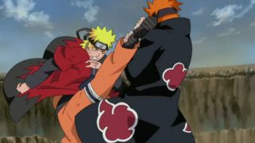
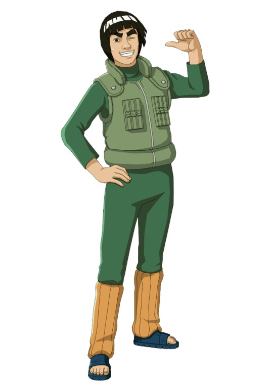
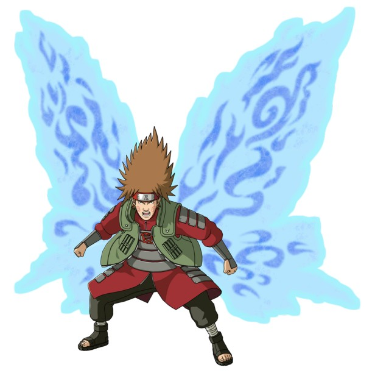
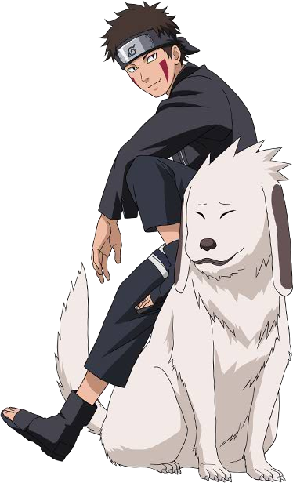
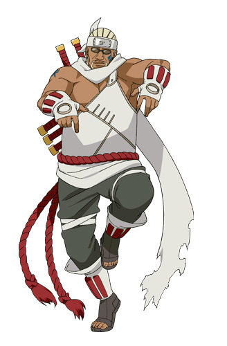
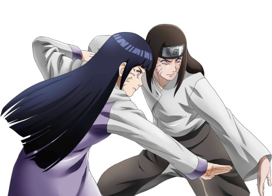

|
Taijutsu techniques are the body and hand to hand skills of the ninja. |
 |
Bunshin Kaiten Kakatou Otoshi - Clone Spinning Heel DropCharacter Use: Uzumaki Naruto Bunshin Kaiten Kakatou Otoshi is a Taijutsu technique used by Uzumaki Naruto. |
 |
Bunshin Taiatari - Clone Ramming Suicide AttackCharacter Use: Uzumaki Naruto Bunshin Taiatari is a Taijutsu technique used by Uzumaki Naruto against Gaara in his mini-Shukaku form. |
Asakujaku - Morning PeacockCharacter Use: Might Guy Asakujaku is a Taijutsu technique used by Might Guy. |
 |
Dynamic • Entry (Dainamikku • Entorii)Character Use: Might Guy Dynamic Entry is a Taijutsu technique used by Might Guy. |
Choudan Bakugeki - Butterfly-Bomb BombardmentCharacter Use: Akimichi Chouji Choudan Bakugeki is a Taijutsu technique which utilizes the red Akimichi hyourougan pill. |
 |
Chou Harite - Super Open Hand SlapCharacter Use: Akimichi Chouji Chou Harite is a Taijutsu technique which is used in conjunction with the Akimichi clan's Baika no Jutsu. |
Dynamic Marking (Dainamikku Maakingu)Character Use: Akamaru Dynamic Marking is a technique used by the Inuzuka clan. |
 |
Garouga - Dual Wolf FangCharacter Use: Akamaru Garouga is one of the ultimate Taijutsu techniques of the Inuzuka Clan. |
Heddobatto - (Headbutt) Eight Headed SwordCharacter Use: Killer Bee Heddo Batto is a Taijutsu technique utilized by the Cloud Jinchuuriki Killer Bee. |
 |
Daburu Rariatto - (Double Lariat) Severing Bull Lightning Plow Heated BladeCharacter Use: Killer Bee Daburu Rariatto is a Taijutsu technique utilized by the Cloud Jinchuuriki Killer Bee and his brother Yondaime Raikage. |
Hakke Rokujuuyonshou - Eight Divination Signs, Sixty-Four Palms of the HandCharacter Use: Hyuuga Clan Hakke Rokujuuyonshou is a Taijutsu technique unique to the Hyuuga bloodline. |
 |
Hakkeshou Kaiten - Eight Divination Palms of the Hand, Heavenly SpinCharacter Use: Hyuuga Clan Hakkeshou Kaiten is a Taijutsu technique unique to the Hyuuga bloodline using the Juuken. |